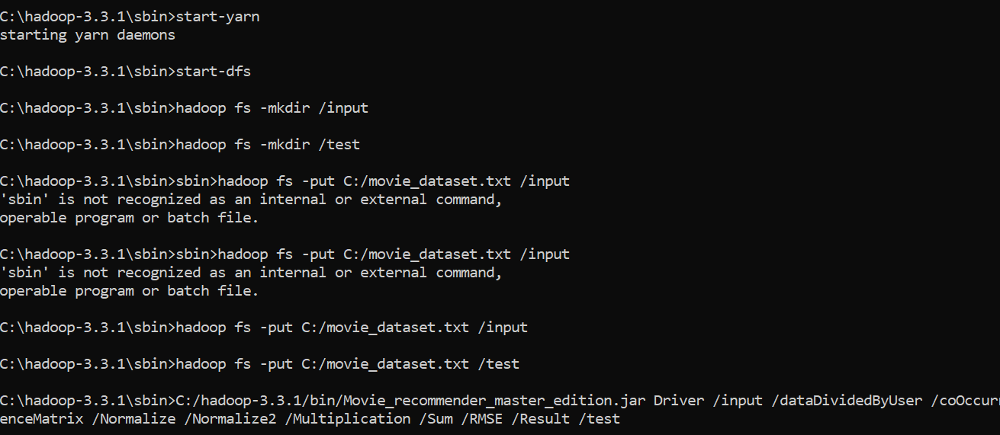
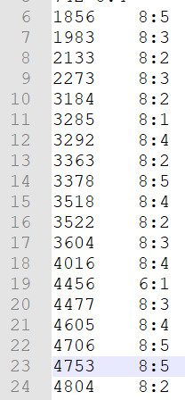
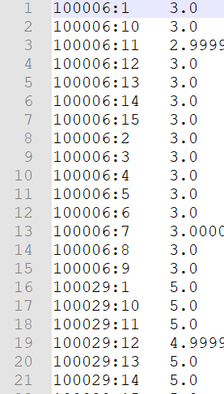

A recommendation system that extends classic collaborative filtering to handle multiple rating criteria, implemented as a distributed MapReduce pipeline on Hadoop.
Ein Empfehlungssystem, das klassisches kollaboratives Filtern um mehrere Bewertungskriterien erweitert, implementiert als verteilte MapReduce-Pipeline auf Hadoop.
Collaborative filtering recommendation systems face a scalability problem: as the number of users and items grows, computing similarities and generating recommendations on a single machine becomes too slow and resource-heavy.
Empfehlungssysteme mit kollaborativem Filtern stoßen an Skalierungsgrenzen: Mit wachsender Nutzer- und Item-Zahl wird die Berechnung von Ähnlichkeiten und Empfehlungen auf einer einzelnen Maschine zu langsam und ressourcenintensiv.
Most classic systems also rely on a single overall rating per item, whereas rating on several criteria (e.g. plot, acting, direction) would allow more precise recommendations — provided the extra data volume can be processed efficiently.
Zudem stützen sich klassische Systeme meist auf eine einzige Gesamtbewertung pro Item, während eine mehrkriterielle Bewertung (z. B. Handlung, Schauspiel, Regie) präzisere Empfehlungen ermöglichen würde — sofern das zusätzliche Datenvolumen effizient verarbeitet werden kann.
The project reproduces the item-based collaborative filtering + MapReduce model published by Shen & Chen (2020) as a suite of 5 Hadoop jobs, then extends Job 1: instead of using a single rating per item, it averages three per-criterion ratings (e.g. plot, acting, direction) into one score before the pipeline runs — the model's own multicriteria extension.
Das Projekt reproduziert das von Shen & Chen (2020) veröffentlichte Modell für item-basiertes kollaboratives Filtern mit MapReduce als Folge von 5 Hadoop-Jobs und erweitert anschließend Job 1: Statt einer einzigen Bewertung pro Item werden drei Kriterienbewertungen (z. B. Handlung, Schauspiel, Regie) vor dem Pipeline-Lauf zu einem Wert gemittelt — die eigene Mehrkriterien-Erweiterung des Modells.
Job 1 is extended to aggregate several per-criterion ratings (acting, plot, direction...) into a single average rating before the pipeline runs.
Job 1 wird erweitert, um mehrere Kriterienbewertungen (Schauspiel, Handlung, Regie...) vor dem Pipeline-Lauf zu einer einzigen Durchschnittsbewertung zusammenzufassen.
Data splitting, co-occurrence matrix, normalization, multiplication and sum — each step distributed across the Hadoop cluster.
Datenaufteilung, Kookkurrenzmatrix, Normalisierung, Multiplikation und Summe — jeder Schritt auf dem Hadoop-Cluster verteilt.
Data and intermediate results pass through Hadoop's distributed file system between each job.
Daten und Zwischenergebnisse werden zwischen den Jobs über Hadoops verteiltes Dateisystem geleitet.
Prediction accuracy is measured by comparing actual and predicted ratings on a sample of test users.
Die Vorhersagegenauigkeit wird durch den Vergleich von tatsächlicher und vorhergesagter Bewertung an einer Test-Nutzerstichprobe gemessen.
The system was tested on the MovieLens dataset, which records movie ratings on a 5-star scale.
Das System wurde mit dem MovieLens-Datensatz getestet, der Filmbewertungen auf einer 5-Sterne-Skala erfasst.



| UserNutzer | Actual ratingTatsächliche Bewertung | Predicted ratingVorhergesagte Bewertung | RMSE |
|---|---|---|---|
| 1488844 | 3 | 3 | 1.285 |
| 1488844 | 4 | 3.9 | 1.730 |
Each of the 5 pipeline jobs follows the same MapReduce pattern. Below is a simplified version (word count) illustrating the Mapper/Reducer structure reused to build each step of the recommendation system.
Jeder der 5 Pipeline-Jobs folgt demselben MapReduce-Muster. Es folgt eine vereinfachte Version (Wortzählung), die die für jeden Schritt des Empfehlungssystems wiederverwendete Mapper/Reducer-Struktur veranschaulicht.
public class WordMapper extends Mapper<LongWritable, Text, Text, IntWritable> {
private final static IntWritable one = new IntWritable(1);
private Text word = new Text();
public void map(LongWritable key, Text value, Context context) {
StringTokenizer itr = new StringTokenizer(value.toString());
while (itr.hasMoreTokens()) {
word.set(itr.nextToken());
context.write(word, one);
}
}
}public class WordReducer extends Reducer<Text, IntWritable, Text, IntWritable> {
public void reduce(Text key, Iterable<IntWritable> values, Context context) {
int sum = 0;
for (IntWritable value : values) {
sum += value.get();
}
context.write(key, new IntWritable(sum));
}
}| LanguageSprache | Java 1.8.0 |
| ProcessingVerarbeitung | Hadoop MapReduce 3.3.1 |
| StorageSpeicherung | HDFS |
| EnvironmentUmgebung | Eclipse IDE (Java Developers, 2019.09) |
| DatasetDatensatz | MovieLens |
| Target systemZielsystem | Windows 10 — Dell i5 vPro, 8 GB RAMWindows 10 — Dell i5 vPro, 8 GB RAM |
| Reference modelReferenzmodell | Shen, J. & Chen, L. (2020), Int. J. Computational Science and EngineeringInt. J. Computational Science and Engineering |
State of the art of recommendation systems, detail of the multicriteria model and full evaluation.
Stand der Forschung zu Empfehlungssystemen, Detailbeschreibung des Mehrkriterienmodells und vollständige Evaluation.